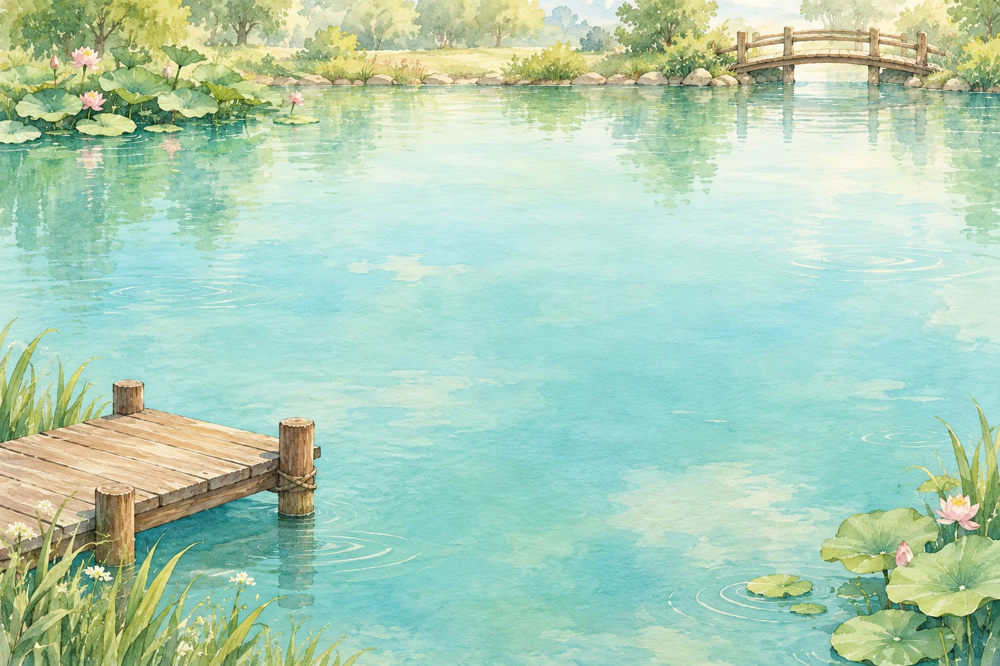
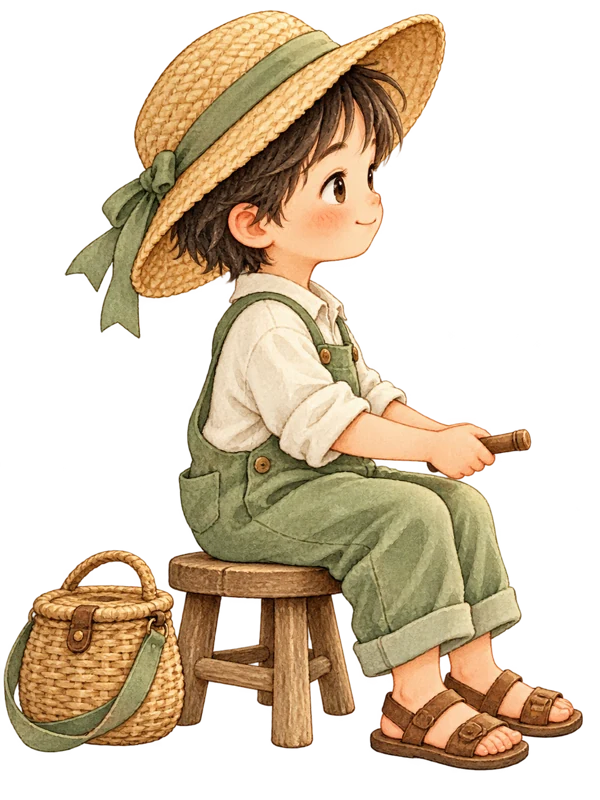

햇살이 머무는 작은 물가수채 낚시 시안 · 02

맑음 · 느긋한 하루
연못을 준비하고 있어요
오늘은 어떤 물고기를 만날까요?
작은 물결에 찌를 던져 보세요.

이번 낚시
도감 0 / 300자
기록은 이 기기에 저장됩니다.
9급 · 입문 · 만나고, 기억하고, 도전해요
물고기를 만나고, 급수 합격까지
배움의 물길을 준비하고 있어요.
9급은 게임의 입문 단계입니다. 급수 도전은 자체 제작 연습이며 공식 합격 판정이 아닙니다. 지역별 새 풍경은 준비 중입니다.